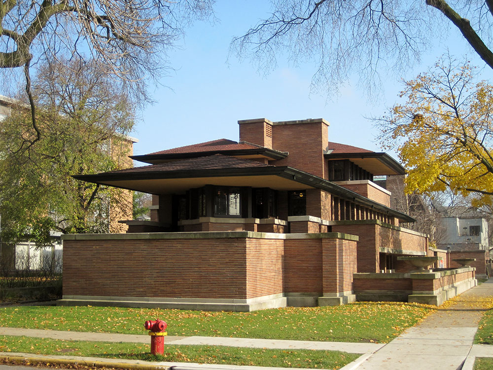
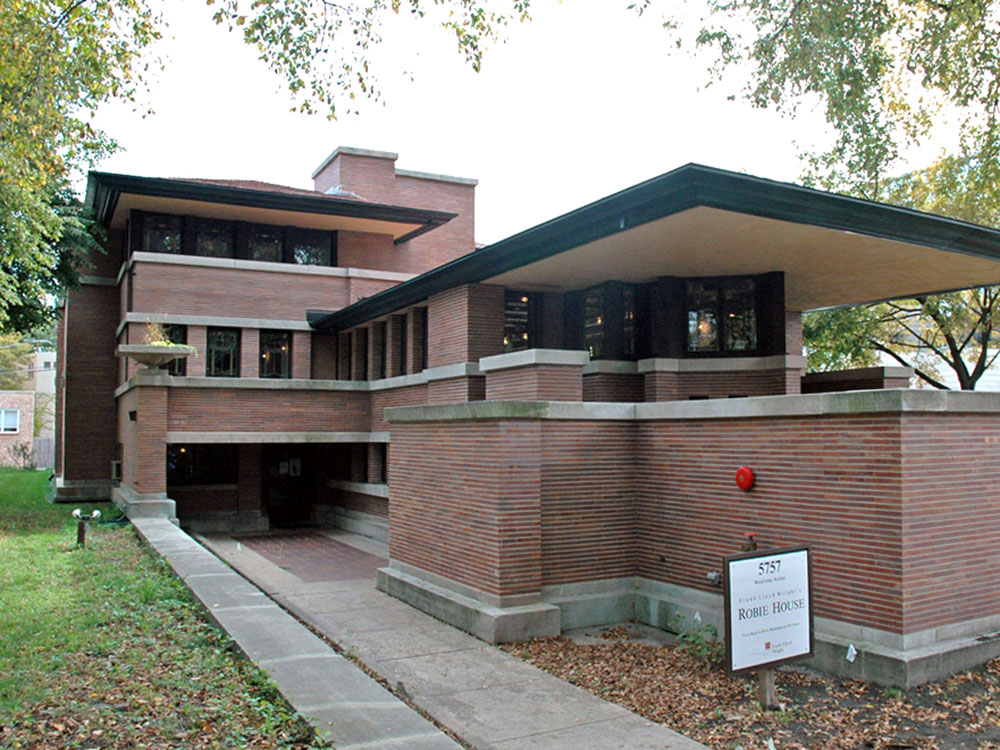
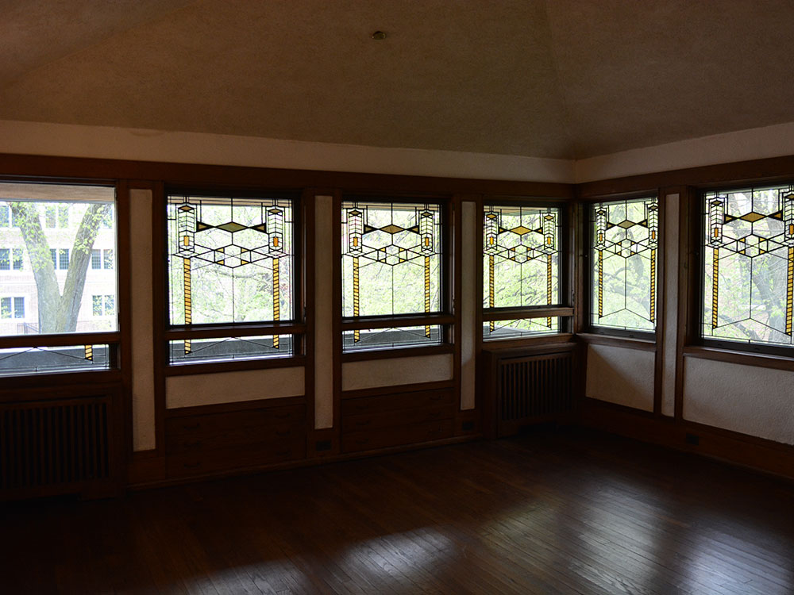

Building designed as a single family home by architect Frank Lloyd Wright and is renowned as the greatest example of Prairie School, the first architectural style considered uniquely American
General Information
How to Get There
From Chicago (8 mi): Take South DuSable Lake Shore Drive south, exit at 53rd Street, continue west to South Woodlawn Avenue, and turn south to the house at 5757 S. Woodlawn Avenue on the University of Chicago campus.
Overview
The Frederick C. Robie House is a national historic landmark now on the campus of the University of Chicago in the South Side neighborhood of Hyde Park in Chicago, Illinois. Built between 1909 and 1910, the building was designed as a single family home by architect Frank Lloyd Wright and is renowned as the greatest example of Prairie School, the first architectural style considered uniquely American. It was designated a National Historic Landmark on November 27, 1963, and was on the first National Register of Historic Places list of October 15, 1966. Robie House and a selection of other properties by Wright were inscribed on the World Heritage List under the title "The 20th-Century Architecture of Frank Lloyd Wright" in July 2019.
Architecture
The Robie House is one of the best known examples of Frank Lloyd Wright's Prairie style of architecture. The term was coined by architectural critics and historians (not by Wright) who noticed how the buildings and their various components owed their design influence to the landscape and plant life of the midwest prairie of the United States. Typical of Wright's Prairie houses, he designed not only the house, but all of the interiors, the windows, lighting, rugs, furniture and textiles. As Wright wrote in 1910, "it is quite impossible to consider the building one thing and its furnishings another. ... They are all mere structural details of its character and completeness."
The projecting cantilevered roof eaves, continuous bands of art-glass windows, and the use of Roman brick emphasize the horizontal, which had rich associations for Wright. The horizontal line reminded him of the American prairie and was a line of repose and shelter, appropriate for a house. The exterior walls are double-wythe construction of a Chicago common brick core with a red-orange iron-spotted Roman brick veneer. To further emphasize the horizontal of the bricks, the horizontal joints were filled with a cream-colored mortar and the small vertical joints were filled with brick-colored mortar. From a distance, this complex and expensive tuckpointing creates an impression of continuous lines of horizontal color and minimizes the appearance of individual bricks. The design of the art glass windows is an abstract pattern of colored and clear glass using Wright's favorite 30 and 60-degree angles. Wright used similar designs in tapestries inside the house and for gates surrounding the outdoor spaces and enclosing the garage courtyard. Robie's generous budget allowed Wright to design a house with a largely steel structure, which accounts for the minimal deflection of the eaves. The planter urns, copings, lintels, sills and other exterior trimwork are of Bedford limestone.
In plan, the house is designed as two large rectangles that seem to slide by one another. Mr. Wright referred to the rectangle on the southwest portion of the site, which contains the principal living spaces of the house, as "the major vessel." On the first floor are the "billiards" room (west end) and children's playroom (east end). The billiards room provided access to a large walk-in safe and a storage area built underneath the front porch projection at the west end of the site. The billiards and playroom open into a small passage and doors near the center of the building to an enclosed garden on the south side of the building. Another door from the playroom opens into the courtyard on the east end of the site. On the second floor are the entry hall at the top of the central stairway, the living room (west end) and the dining room (east end). Built-in inglenook bench cabinetry originally separated the entry hallway from the living room. The living and dining rooms flow into one another along the south side of the building and open through a series of twelve French doors containing art glass panels to an exterior balcony running the length of the south side of the building that overlooks the enclosed garden. The west end of the living room contains a "prow" with art glass windows and two art glass doors that open onto the west porch beneath the cantilevered roof. Wright intended that the users of the building move freely from the interior space to the exterior space.
The rectangle on the northeast portion of the site, called "the minor vessel," contains the more functional and service-related rooms of the house. On the first floor is the main door and entrance hall (west end) from which a stairway leads to the second floor living and dining rooms. A half bath is located on the north side of the entrance hall. Further east are a coat closet and back stairway, the boiler room, laundry room, and coal storage room, followed by a small workshop, half bath, and a three-car garage. The westernmost bay of the garage originally contained a mechanic's pit, and the easternmost bay contained equipment to wash and clean automobiles. On the second floor of the minor vessel is a guest bedroom above the entrance hall and an adjoining full bath. East of the back stairway are the kitchen and butler's pantry, and the servants' sitting room. Two bedrooms and a full bathroom above the garage complete the quarters for the live-in servants.
The third floor overlaps the major and minor vessels in the center of the building. Wright referred to the third floor as the "belvedere," the "place in command of beautiful views." The south side of the third floor contains the master bedroom, dressing area, a full bathroom, and, through a small closet and an art glass door, a balcony facing south and west. Two additional bedrooms and a full bathroom are located on the north side of this floor. All of the windows on this level contain art glass panels. Dresser drawers are built into the walls of the bedrooms underneath the windows, and project into the eave spaces.
The entire building is approximately 9,062 square feet (841.9 m2).
The chimney mass containing four fireplaces—one in the billiards room, playroom, living room and master bedroom—and the main stairway from the entrance hall to the second floor living and dining rooms rise through the center of the house, from which the rest of the building radiates. The chimney mass is constructed of the same brick and limestone as the exterior.
The front door and main entrance is partially hidden on the northwest side of the building beneath an overhanging balcony in order to create a sense of privacy and protection for the family. The entrance hall itself is low-ceilinged and dark, but the stairs to the second floor create a sense of anticipation as the visitor moves upward. Once upstairs, the light filled living and dining rooms create a sharp contrast to the dark entrance hall making the living and dining rooms seem even more special. These two rooms are separated by the central chimney mass, but the spaces are connected along their south sides, and the chimney mass has an opening above the fireplace through which the rooms are visually connected. These features unite the two spaces, creating an openness of plan which, for Wright, was a metaphor for the openness of American political and social life.
As with all Prairie houses, Wright designed the light fixtures for the Robie House. Throughout the house, wall sconces can be found in the shape of a hemispherical shade suspended beneath a square bronze fixture. On the second floor living and dining rooms, spherical globes within wooden squares are integrated into the ceiling trim, further tying the two spaces together visually. Soffit lighting running the length of the north and south sides of the living and dining rooms, as well as soffit lighting in the prows of the living and dining rooms, are covered with Wright-designed wooden grilles, backed with translucent colored glass diffusers. Because these lights are all independently operable, different effects can be created within these spaces. Finally, a Wright-designed table lamp with an art glass shade stood on a Wright-designed library table in the living room.
The steel beams in the ceilings and floors carry most of the building's weight to piers at the east and west ends. As a result, the exterior walls have little structural function, and thus are filled with doors and windows containing 174 art glass panels in 29 different designs. Instead of stylized forms from Nature, a favorite Wright motif, geometric forms predominate. The combination of so much glass and lack of internal structural columns resulted in an airy space that appeared larger than it is, accenting the open plan Wright favored.
Wright also designed the furniture, carpets, and textiles for most Prairie houses. However, Wright-designed furniture in the Robie House was only constructed for the entrance hall, the living and dining rooms, guest bedroom, and one bed for the third-floor bedrooms. Some of these pieces are attributed to Wright's interior design collaborator George Mann Niedecken. Robie's financial situation following his father's death may be the explanation for why the entire house was not furnished with furniture of Wright's designs. Most of the original furniture is currently in the collection of the Smart Museum of Art at the University of Chicago, although only the dining room table and chairs are on more or less permanent display. One of the most striking pieces of the furniture designed by Wright for the Robie House is a sofa with extended armrests, echoing the cantilevers of the exterior roof of the building, which effectively create side tables on each side of the sofa. The Wright-designed sofa has been on loan since 1982 from the Smart Museum to the Metropolitan Museum of Art in New York and is on display as part of the furnishings in the reconstructed living room of the Francis W. Little House (1915) located in the museum. Miniature cantilevers can also be found in the shelves of the built-in dining room buffet and a food preparation island in the kitchen.
This article uses material from the Wikipedia article "Robie House", which is released under the Creative Commons Attribution-Share-Alike License 3.0




